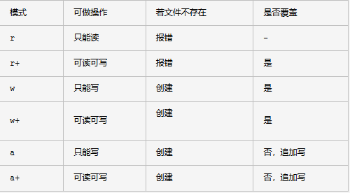

一.open文件读取
1.open（'file'，'mode'）打开一个文件
2.with open（'file'，'mode'）as...
3.'r'： 以只读模式打开（默认）（必须保证文件存在）
file1 = open("D:\新方硕.txt","r")
print (file1.read())
file1.close()
file1 = open(u"D:\新方硕.txt","r")
#文件内中文为手动输入，则需转码
print (file1.read().decode('gbk').encode('utf-8'))
file1.close()
#read()不传参数时默认读取所有
file1 = open(u"D:\新方硕.txt","r")
print (file1.read())
file1.close()
#read(3)括号内参数3代表字节数，一个汉字3个字节
file1 = open(u"D:\新方硕.txt","r")
print (file1.read(3))
file1.close()
#readline()默认读取一行
file1 = open(u"D:\新方硕.txt","r")
print (file1.readline())
file1.close()
#readline(size)括号内填了子节数，则按字节读取
file1 = open(u"D:\新方硕.txt","r")
print (file1.readline(5))
file1.close()
file1 = open(u"D:\新方硕.txt","r")
print (str(file1.readlines()).decode('string_escape'))with open('d:\\test1.txt','r') as file1:
for i in file1.readlines():
print (i)#coding=utf-8
file1 = open(u"D:\\学习.txt")
for i in file1.readlines():
print (i.splitlines()[0])
file1.close()
备注：
read()会一次性读取文件的全部内容，如果文件有10G，内存就爆了，所以，要保险起见，可以反复调用read(size)方法，每次最多读取size个字节的内容。另外，调用readline()可以每次读取一行内容，调用readlines()一次读取所有内容并按行返回list。因此，要根据需要决定怎么调用。read()一次性读取最方便；如果不能确定文件大小，反复调用read(size)比较保险；如果是配置文件，调用readlines()最方便。4.'w'：以只写模式打开
file1 = open("D:\\xfs.txt","w")
file1.write("I am python!")
file1.close()#将test文件内容复制到test1中
file1 = open('d:\\test.txt','r')
file2 = open('d:\\test1.txt','w')
file3 = file2.write(file1.read())
file1.close()
file2.close()
with open('d:\\test.txt','w') as file1:
file2 = file1.write('缘分一道桥\n歌词\n男：\n秦时明月汉时关\n万里长征人未还\n但使龙城飞将在\n不教胡马度阴山\n女：\n狼烟千里乱葬岗\n'
'乱世孤魂无人访\n无言苍天笔墨寒\n笔刀春秋以血偿\n男：\n谈爱恨 不能潦草\n战鼓敲啊敲\n用信任 立下誓言我来熬\n'
'女：\n这缘份 像一道桥\n旌旗飘啊飘\n你想走就请立马抽刀爱一笔勾销\n合：\n谈爱恨 不能潦草\n红尘烧啊烧\n以生死 '
'无愧证明谁重要\n女：\n这缘份 像一道桥\n故事瞧一瞧\n男：\n走天涯你我卸下战袍\n合：\n梦回长城谣')
#报错IOError: File not open for reading
file1 = open("D:\\xfs.txt","w")
file1.write("I am python!")
print (file1.read())5.'a'：以追加模式打开
file1 = open("D:\\xfs.txt","a")
file1.write("我爱HTML")
file1.close()6.seek（）指针从哪里开始写入
file.seek(offset[, whence])offset -- 开始的偏移量，也就是代表需要移动偏移的字节数
whence：可选，默认值为 0。给offset参数一个定义，表示要从哪个位置开始偏移；0代表从文件开头开始算起，1代表从当前位置开始算起，2代表从文件末尾算起。
#表示从第三个子节后开始读取
file1 = open(u"D:\\新方硕.txt","r")
file1.seek(3)
print (file1.read(3))
file1.close()
data = open("d:\\test.txt","r")
data.seek(-15,2)
print (data.read())
data.close()
7.'r+'： 以文本读写模式打开
file1 = open(u"D:\\新方硕.txt","r+")
file1.seek(3)
file1.write("HTML")
file1.close()
#默认从第一个子节开始覆写
file1 = open(u"D:\\新方硕.txt","r+")
file1.seek(3)
file1.write("HTML")
file1.close()